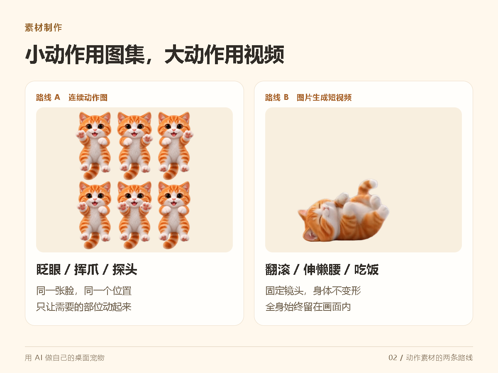
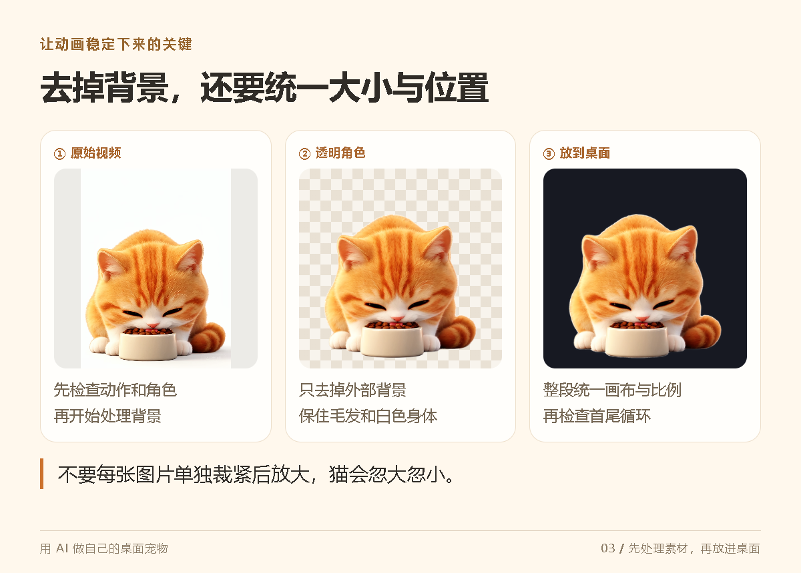
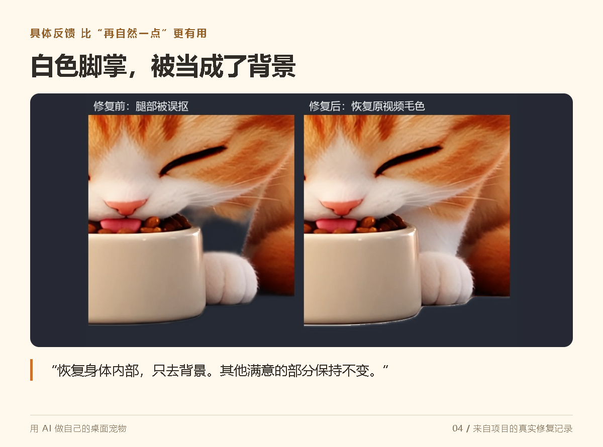
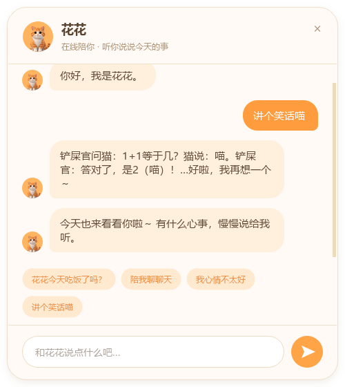
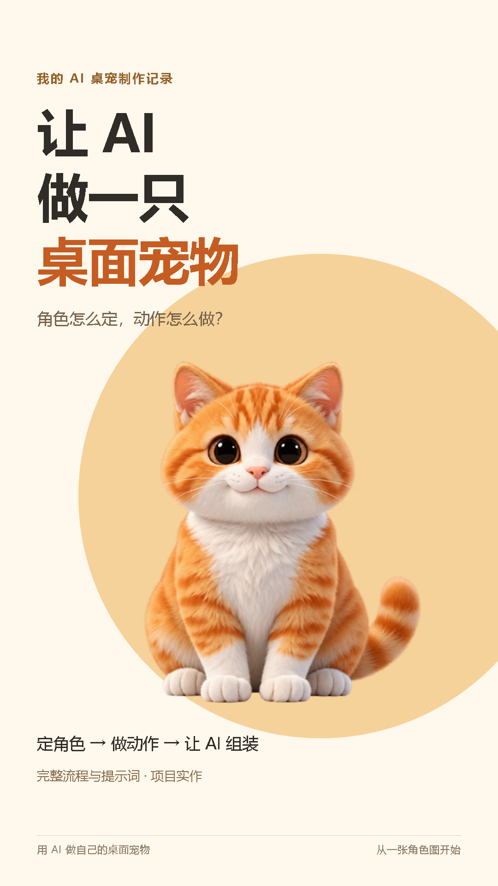

视频号 · 竖版短视频 · 剪辑预案让 AI 做一只自己的桌面宠物
目标约 90 秒。以下为口播与剪辑预案，录音后按实际语速对齐字幕。
打开完整文字稿 · 下载预排字幕 · 返回内容包
镜头 1 / 00—08 秒先看成品

这只住在我桌面上的小猫，从形象、动作到程序，都是交给AI做的。
先用玩耍 GIF 的动态效果开场，接动作菜单截图；不要先放标题页讲背景。
让 AI 做一只桌面宠物
0—3 秒给动作，3—8 秒切菜单。字幕避开脸和前爪。
镜头 2 / 08—17 秒交代流程
它能吃饭、睡觉、玩耍，还能聊天。制作顺序很清楚：先定角色，再做动作，最后组装。
吃饭短片、睡姿和聊天界面快速切换，再显示三步流程图。
定角色 → 做动作 → 组装
吃饭片段约 2 秒；睡姿为静态素材，用轻推镜，不冒充新实录。
镜头 3 / 17—28 秒角色定稿

第一步，选一张角色定稿。以后每次生成，都带上它，固定脸型、毛色和比例，猫才不会越做越不像。
角色定稿出现，依次用文字标出脸型、毛色、比例；展示一小段提示词。
每次生成，都带同一张参考图
不要同时堆完整长提示词；屏幕只显示关键约束。
镜头 4 / 28—40 秒动作的两条路线

第二步，做动作。眨眼、挥爪用连续动作图；翻滚、吃饭可以先生成短视频。记住：镜头固定，全身别出画。
六格挥爪图到玩耍原视频；分屏对照两种路线。
小动作：连续图｜大动作：短视频
保留原片角色全身，横向原视频放进竖版画面，不强行裁满。
镜头 5 / 40—52 秒把素材处理稳定

第三步，让AI去掉背景，统一大小和位置，再接成循环。不要每张图单独放大，否则猫就会一跳一跳。
流程配图后，播放透明玩耍动画；用共同画布外框强调统一大小。
去背景 → 统一画布 → 检查循环
流程卡可以逐步高亮。不要临时制造一段失真动画当真实失败记录。
镜头 6 / 52—63 秒真实问题与修复

这个项目里，白色脚掌就曾被误抠掉。告诉AI：恢复身体内部，只去背景。具体反馈，比一句“再自然点”更有效。
展示现有脚掌修复前后对比，先左后右；画面标记脚掌区域。
指出具体问题，保留满意部分
前后图来自同一张项目历史对比图，不替换成新生成示意图。
镜头 7 / 63—74 秒接入交互

第四步，让AI把动作接进桌宠：默认待机，点击切换，按住能拖，松开恢复。一次接一个，边看边改。
菜单截图配合动作素材切换；若补录实机，这段优先换成点击菜单和拖拽录屏。
一次接一个动作，运行后再改
仅使用现有素材时做功能示意；不要加假鼠标操作冒充实机演示。
镜头 8 / 74—83 秒聊天与记忆

最后加聊天，设定它的性格。想让它重启后还记得你，就要真的做记忆功能，不能只靠一句提示词。
聊天历史界面缓慢推近；再显示“性格”和“记忆”两个短标签。
性格靠设定，记忆要实现
现有聊天图只证明界面展示；不将静态画面当作跨重启记忆验证。
镜头 9 / 83—90 秒收尾引导

先做一只会眨眼、能拖动的宠物。完整流程在配套图文里。你会给它起什么名字？
回到单只角色定稿或玩耍动画，收尾标题与名字问题出现。
你会给自己的桌宠起什么名字？
停留结尾问题约 2 秒，不加入未经提供的二维码或领取口令。